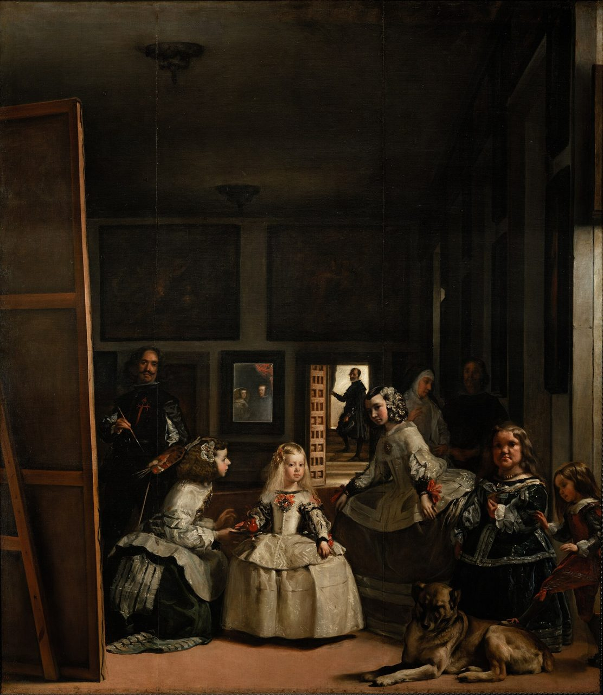

← 藝術101名畫背後的故事 EP13
侍女
委拉斯奎茲・1656

畫裡的人，正在看你。
1656，畫家把自己畫進去
委拉斯奎茲是西班牙國王腓力四世的宮廷畫家。在《侍女》裡，他站在左邊一張巨大的畫布後面，手拿畫筆，抬頭看向畫外。正中間是五歲的瑪格麗特公主，侍女、宮廷侏儒和一隻大狗圍在旁邊。
後牆那面鏡子
往後牆正中間看，小鏡子裡映著國王和王后。最常見的解讀是：他們正站在畫外當模特兒，也就是觀眾的位置。也有學者認為，鏡子反射的是畫布上的內容。三百多年來，沒有標準答案。
晚三年的紅十字
畫家胸前的聖地牙哥騎士團紅十字，是他 1659 年受封後才補上的，據說是國王下令。義大利畫家焦爾達諾稱這幅畫是「繪畫的神學」。
下次看到它，先看這裡
後牆的鏡子 鏡中映著國王腓力四世與王后
畫家本人 手拿畫筆看向畫外，胸前有紅十字
門口的侍從 王后侍從何塞．涅托站在逆光門口
作品資料
委拉斯奎茲（Diego Velázquez）
《侍女》Las Meninas，1656
油彩、畫布 318 × 276 公分
馬德里 普拉多美術館（Museo del Prado）
《侍女》Las Meninas，1656
油彩、畫布 318 × 276 公分
馬德里 普拉多美術館（Museo del Prado）